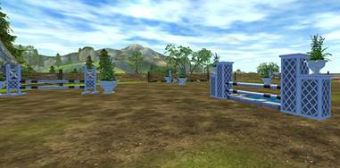
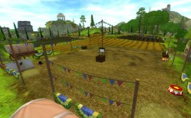
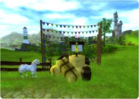
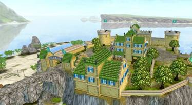
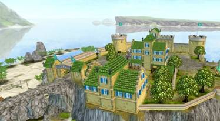
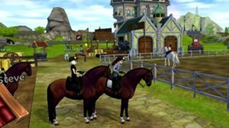
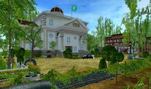
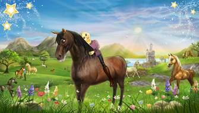

|
Скачки
с Лошадьми Юрвика
Гильермо Гадеа представляет ЛЮ, Лошадей Юрвика,
и хочет привлечь внимание к разным породам лошадей, чтобы всадники могли
продемонстрировать их в самом лучшем свете в различных скачках и
соревнованиях. Он решил начать с прикольного соревнования по конкуру на
манеже рядом с Конным центром Серебряной Поляны, и чтобы принять в нем
участие, нужно приехать верхом на ганноверской лошади. В этих особых
соревнованиях ваша лошадь также получит больше опыта, чем в других скачках!
Гильермо будет проводить эти соревнования только в течение
одной недели — но не волнуйтесь, он скоро вернется!

|
|
Чемпионат
в Нью Хиллкрест
Мы подумали, что настало время для нового чемпионата,
поэтому на этой неделе радуем отличными новостями всех вас, кто хочет
посоревноваться!
Вы сможете проехать дистанцию, полную машин, пчёл и кучи
других препятствий в нашей новой гонке в Нью Хиллкрест?

|
|
Чемпионат
пони
- Увлекательный
чемпионат пони открылся около церкви Дойль, у
Форта Пинта. Садись верхом на пони, скачи туда и соревнуйтесь со всеми своими
друзьями! Для участия в чемпионате пони, ты должна скакать верхом на пони.

|
|
Чемпионат
Форта Пинта
В этом чемпионате
можно участвовать с любого уровня! Этот чемпионат проходит по пляжу Форта
Пинта. Поэтому быстрее бегите на пляж и принимайте участие в этом чемпионате!
Там вы встретите множество игроков которые тоже
принимают участие в этом чемпионате. Там будет очень много препятствий по
типу: летящее со склона сено, кусты которые
замедляют лошадь и неожиданные повороты. Если в осмелитесь пройти этот
чемпионат то получите золотую медаль которую можно
продать за хорошие монеты и купить что нибудь
полезное.
  
|
|
Чемпионат
Йорвикских конюшен
Вы думаете что конюшни это тихое и спокойное место? Только
не Йорвийские Конюшни в них проходит очень
большой чемпионат! И не бойтесь если мимо вас
пролетят целая толпа лошадей! Ведь это не спокойные конюшни Морланда а серьёзные Конюшни
со своим чемпионатом! Так что берите самую быструю лошадь и вперёд к
победам!

|
|
Чемпионат
Серебряной
поляны
Думаете на Серебряной
поляне валяется серебро? Вы не правы! Но серебро, даже золото! Можно получить принимая участие в Чемпионате Серебряной
Поляны! Выбирай из своей конюшни самую ловкую и быструю лошадь, и вперёд на
Серебряную Поляну! Если ты будешь успешно тренироваться и побеждать в
других чемпионатах то сможешь получить золотую
медаль! Ну а если ты стараешься стремиться к победе но у тебя не получается
но ты занял 2 место то ты получишь серебряную медаль, но все равно
тренируйся и стремись к победам! Ну а если у тебя не очень получается и ты
занял 3 место то не растраевайся. Ты получишь
бронзовую медаль! Но стремись к победам! Тренируйся, участвуй в других
соревнованиях и сможешь побеждать! Все эти медали ты можешь продать и
получить монеты.

|
|
Скользкая
Гонка Джингла
Джингл, помощник
по гонкам, ОБОЖАЕТ гонки! Он организует супервеселую
гонку по скользкому льду на озере в деревне. Поговори с ним у стоянки
саней, чтобы принять участие в гонке. Не забудь права для саней. Кстати, а
у тебя есть права для саней? Если тебе повезет, Джингл
и его коллега Джангл все равно разрешат тебе
поучаствовать в гонке!
|
|
Ну и это ещё не все соревнования в
этой большой игре Star Stable! После скачивания игры прохождения обучения
вы сможете участвовать во всех возможных соревнованиях! Ну
или Чемпионатах в разных местах этой большой игры с открытым миром!
Ждём тебя в игре!

Моё имя в игре: Таисия Долфинлунд
Имя моей лошади: Зимняя Охотница
|